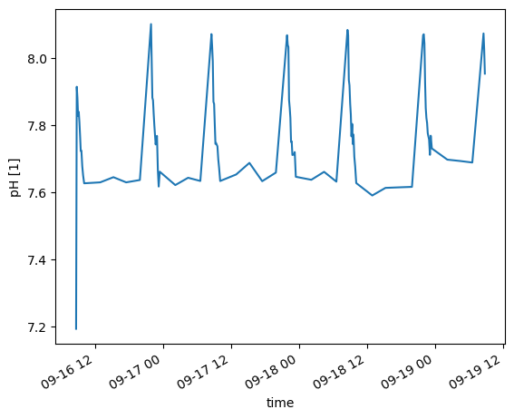
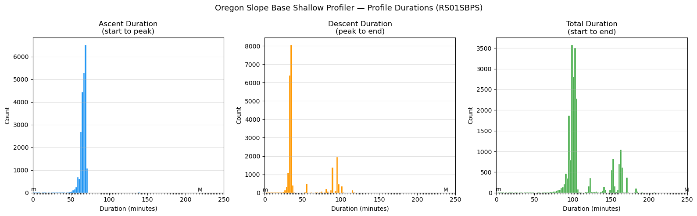

Stub Work#
On-pause code moved from DataSharding.ipynb. These cells are not part of the active pipeline. They contain exploratory or deferred work:
Profile tracking and status
Dissolved oxygen investigation
Temperature mixed layer depth (TMLD)
Profile count verification
S3 parity checks
Miscellaneous exploratory cells
Inspect source files and shard files#
import xarray as xr
d = xr.open_dataset('/home/rob/ooi/redux/redux2022/RCA_sb_sp_ph_2022_331_15377_1_V1.nc')
d
---------------------------------------------------------------------------
KeyError Traceback (most recent call last)
File ~/miniconda3/envs/argosy/lib/python3.11/site-packages/xarray/backends/file_manager.py:211, in CachingFileManager._acquire_with_cache_info(self, needs_lock)
210 try:
--> 211 file = self._cache[self._key]
212 except KeyError:
File ~/miniconda3/envs/argosy/lib/python3.11/site-packages/xarray/backends/lru_cache.py:56, in LRUCache.__getitem__(self, key)
55 with self._lock:
---> 56 value = self._cache[key]
57 self._cache.move_to_end(key)
KeyError: [<class 'netCDF4._netCDF4.Dataset'>, ('/home/rob/ooi/redux/redux2022/RCA_sb_sp_ph_2022_331_15377_1_V1.nc',), 'r', (('clobber', True), ('diskless', False), ('format', 'NETCDF4'), ('persist', False)), 'a83b68dc-4c41-46bc-a980-274228970a5b']
During handling of the above exception, another exception occurred:
FileNotFoundError Traceback (most recent call last)
Cell In[1], line 2
1 import xarray as xr
----> 2 d = xr.open_dataset('/home/rob/ooi/redux/redux2022/RCA_sb_sp_ph_2022_331_15377_1_V1.nc')
3 d
File ~/miniconda3/envs/argosy/lib/python3.11/site-packages/xarray/backends/api.py:566, in open_dataset(filename_or_obj, engine, chunks, cache, decode_cf, mask_and_scale, decode_times, decode_timedelta, use_cftime, concat_characters, decode_coords, drop_variables, inline_array, chunked_array_type, from_array_kwargs, backend_kwargs, **kwargs)
554 decoders = _resolve_decoders_kwargs(
555 decode_cf,
556 open_backend_dataset_parameters=backend.open_dataset_parameters,
(...)
562 decode_coords=decode_coords,
563 )
565 overwrite_encoded_chunks = kwargs.pop("overwrite_encoded_chunks", None)
--> 566 backend_ds = backend.open_dataset(
567 filename_or_obj,
568 drop_variables=drop_variables,
569 **decoders,
570 **kwargs,
571 )
572 ds = _dataset_from_backend_dataset(
573 backend_ds,
574 filename_or_obj,
(...)
584 **kwargs,
585 )
586 return ds
File ~/miniconda3/envs/argosy/lib/python3.11/site-packages/xarray/backends/netCDF4_.py:590, in NetCDF4BackendEntrypoint.open_dataset(self, filename_or_obj, mask_and_scale, decode_times, concat_characters, decode_coords, drop_variables, use_cftime, decode_timedelta, group, mode, format, clobber, diskless, persist, lock, autoclose)
569 def open_dataset( # type: ignore[override] # allow LSP violation, not supporting **kwargs
570 self,
571 filename_or_obj: str | os.PathLike[Any] | BufferedIOBase | AbstractDataStore,
(...)
587 autoclose=False,
588 ) -> Dataset:
589 filename_or_obj = _normalize_path(filename_or_obj)
--> 590 store = NetCDF4DataStore.open(
591 filename_or_obj,
592 mode=mode,
593 format=format,
594 group=group,
595 clobber=clobber,
596 diskless=diskless,
597 persist=persist,
598 lock=lock,
599 autoclose=autoclose,
600 )
602 store_entrypoint = StoreBackendEntrypoint()
603 with close_on_error(store):
File ~/miniconda3/envs/argosy/lib/python3.11/site-packages/xarray/backends/netCDF4_.py:391, in NetCDF4DataStore.open(cls, filename, mode, format, group, clobber, diskless, persist, lock, lock_maker, autoclose)
385 kwargs = dict(
386 clobber=clobber, diskless=diskless, persist=persist, format=format
387 )
388 manager = CachingFileManager(
389 netCDF4.Dataset, filename, mode=mode, kwargs=kwargs
390 )
--> 391 return cls(manager, group=group, mode=mode, lock=lock, autoclose=autoclose)
File ~/miniconda3/envs/argosy/lib/python3.11/site-packages/xarray/backends/netCDF4_.py:338, in NetCDF4DataStore.__init__(self, manager, group, mode, lock, autoclose)
336 self._group = group
337 self._mode = mode
--> 338 self.format = self.ds.data_model
339 self._filename = self.ds.filepath()
340 self.is_remote = is_remote_uri(self._filename)
File ~/miniconda3/envs/argosy/lib/python3.11/site-packages/xarray/backends/netCDF4_.py:400, in NetCDF4DataStore.ds(self)
398 @property
399 def ds(self):
--> 400 return self._acquire()
File ~/miniconda3/envs/argosy/lib/python3.11/site-packages/xarray/backends/netCDF4_.py:394, in NetCDF4DataStore._acquire(self, needs_lock)
393 def _acquire(self, needs_lock=True):
--> 394 with self._manager.acquire_context(needs_lock) as root:
395 ds = _nc4_require_group(root, self._group, self._mode)
396 return ds
File ~/miniconda3/envs/argosy/lib/python3.11/contextlib.py:137, in _GeneratorContextManager.__enter__(self)
135 del self.args, self.kwds, self.func
136 try:
--> 137 return next(self.gen)
138 except StopIteration:
139 raise RuntimeError("generator didn't yield") from None
File ~/miniconda3/envs/argosy/lib/python3.11/site-packages/xarray/backends/file_manager.py:199, in CachingFileManager.acquire_context(self, needs_lock)
196 @contextlib.contextmanager
197 def acquire_context(self, needs_lock=True):
198 """Context manager for acquiring a file."""
--> 199 file, cached = self._acquire_with_cache_info(needs_lock)
200 try:
201 yield file
File ~/miniconda3/envs/argosy/lib/python3.11/site-packages/xarray/backends/file_manager.py:217, in CachingFileManager._acquire_with_cache_info(self, needs_lock)
215 kwargs = kwargs.copy()
216 kwargs["mode"] = self._mode
--> 217 file = self._opener(*self._args, **kwargs)
218 if self._mode == "w":
219 # ensure file doesn't get overridden when opened again
220 self._mode = "a"
File src/netCDF4/_netCDF4.pyx:2463, in netCDF4._netCDF4.Dataset.__init__()
File src/netCDF4/_netCDF4.pyx:2026, in netCDF4._netCDF4._ensure_nc_success()
FileNotFoundError: [Errno 2] No such file or directory: b'/home/rob/ooi/redux/redux2022/RCA_sb_sp_ph_2022_331_15377_1_V1.nc'
!ls ~/ooi/ooinet/rca/SlopeBase/scalar/2017_ph
deployment0004_RS01SBPS-SF01A-2D-PHSENA101-streamed-phsen_data_record_20170804T210000.369097-20180321T000000.623145.nc
import xarray as xr
d = xr.open_dataset('~/ooi/ooinet/rca/SlopeBase/scalar/2022_ph/deployment0010_RS01SBPS-SF01A-2D-PHSENA101-streamed-phsen_data_record_20220916T083953.847069-20221206T195550.204456.nc')
d = d.swap_dims({'obs': 'time'})
d
<xarray.Dataset>
Dimensions: (time: 2387,
ph_light_measurements_dim_0: 92,
signal_intensity_578_dim_0: 23,
reference_light_measurements_dim_0: 16,
signal_intensity_434_dim_0: 23)
Coordinates:
obs (time) int32 0 1 2 3 ... 2384 2385 2386
* signal_intensity_578_dim_0 (signal_intensity_578_dim_0) int32 0 ...
* reference_light_measurements_dim_0 (reference_light_measurements_dim_0) int32 ...
* ph_light_measurements_dim_0 (ph_light_measurements_dim_0) int32 0...
lon (time) float64 ...
lat (time) float64 ...
* signal_intensity_434_dim_0 (signal_intensity_434_dim_0) int32 0 ...
depth (time) float64 ...
* time (time) datetime64[ns] 2022-09-16T08:3...
Data variables: (12/28)
ph_light_measurements (time, ph_light_measurements_dim_0) float32 ...
ph_seawater_qartod_results (time) uint8 ...
phsen_thermistor_temperature (time) float64 ...
phsen_battery_volts (time) float64 ...
record_type (time) float32 ...
ph_seawater_qartod_executed (time) object ...
... ...
preferred_timestamp (time) object ...
int_ctd_pressure (time) float64 ...
record_time (time) datetime64[ns] ...
checksum (time) float32 ...
reference_light_measurements (time, reference_light_measurements_dim_0) float32 ...
unique_id (time) float32 ...
Attributes: (12/55)
node: SF01A
comment:
publisher_email:
sourceUrl: http://oceanobservatories.org/
collection_method: streamed
stream: phsen_data_record
... ...
geospatial_lon_max: -125.389591
geospatial_lon_units: degrees_east
geospatial_lon_resolution: 0.1
geospatial_vertical_units: meters
geospatial_vertical_resolution: 0.1
geospatial_vertical_positive: downd.ph_seawater[0:100].plot()
[<matplotlib.lines.Line2D at 0x73403f1c24d0>]

Paused: Profile tracking#
For a fixed site + year (example: Oregon Slope Base, 2016) create a metadata file tracking presence/absence
of the possible profiles: Quantity 365 * 9 profiles + 9 more in leap years. This is a record of what data are
actually present in the data system. This can be done from profileIndices but the actual yield in the reduxYYYY
folders is in some cases less; so work from the shard inventory.
This code intentionally disabled until revisited with intent.
"""
Generate CSV file tracking CTD temperature profile status for OOI RCA Slope Base shallow profiler.
Creates rca_sb_ctd_temp_profile_status.csv with daily profile availability (2014-2025).
"""
import csv
import datetime
from pathlib import Path
def is_leap_year(year):
"""Check if year is a leap year."""
return year % 4 == 0 and (year % 100 != 0 or year % 400 == 0)
def get_days_in_year(year):
"""Get number of days in year."""
return 366 if is_leap_year(year) else 365
def julian_to_date(year, julian_day):
"""Convert Julian day to dd-MON-yyyy format."""
date = datetime.datetime(year, 1, 1) + datetime.timedelta(days=julian_day - 1)
return date.strftime("%d-%b-%Y").upper()
def generate_profile_status_csv():
"""Generate the profile status CSV file."""
output_file = Path("rca_sb_ctd_temp_profile_status.csv")
# Define year range
start_year = 2014
end_year = 2025
# Column headers
headers = ['year', 'julian_day', 'date', '1', '2', '3', '4', '5', '6', '7', '8', '9', 'Total', 'Noon', 'Midnight']
total_days = 0
total_profiles = 0
with open(output_file, 'w', newline='') as csvfile:
writer = csv.writer(csvfile)
# Write headers
writer.writerow(headers)
# Generate rows for each year
for year in range(start_year, end_year + 1):
days_in_year = get_days_in_year(year)
for julian_day in range(1, days_in_year + 1):
date_str = julian_to_date(year, julian_day)
# Initialize profile columns (1-9) as 0 (will be populated when processing actual data)
profiles = [0] * 9
# Calculate totals
total_profiles_day = sum(profiles)
# Placeholder values for noon and midnight profile indices
noon_profile = 0 # Will be determined from actual profile timing
midnight_profile = 0 # Will be determined from actual profile timing
# Write row
row = [year, julian_day, date_str] + profiles + [total_profiles_day, noon_profile, midnight_profile]
writer.writerow(row)
total_days += 1
total_profiles += total_profiles_day
# Print diagnostics
print(f"Generated {output_file}")
print(f"Total days: {total_days}")
print(f"Date range: {start_year} - {end_year}")
print(f"Years covered: {end_year - start_year + 1}")
print(f"Current mean profiles per day: {total_profiles / total_days:.2f}")
print(f"Expected profiles per day when populated: 9")
print(f"File ready for population with actual profile data")
if __name__ == "__main__":
generate_profile_status_csv()
Paused: Profile update#
Update the profile status program, write extracted profile files, create a timeline file
File intentionally disabled
"""
Extract individual temperature profiles from CTD NetCDF files to redux files.
"""
import pandas as pd
import xarray as xr
from pathlib import Path
def analyze_source_file(netcdf_file):
"""Analyze source NetCDF file time range and estimate profiles."""
ds = xr.open_dataset(netcdf_file)
ds = ds.swap_dims({'obs': 'time'})
start_time = pd.to_datetime(ds.time.values[0])
end_time = pd.to_datetime(ds.time.values[-1])
time_range_days = (end_time - start_time).days + 1
estimated_profiles = time_range_days * 9
print(f"=== SOURCE FILE ANALYSIS ===")
print(f"File: {netcdf_file}")
print(f"Start time: {start_time}")
print(f"End time: {end_time}")
print(f"Time range: {time_range_days} days")
print(f"Estimated profiles (9/day): {estimated_profiles}")
print(f"================================\n")
return ds, start_time, end_time
def load_profile_indices(year):
"""Load profile indices for given year."""
profile_file = Path(f"~/ooi/profileIndices/RS01SBPS_profiles_{year}.csv").expanduser()
if not profile_file.exists():
return None
return pd.read_csv(profile_file)
def extract_profiles(ds, start_time, end_time, output_dir):
"""Extract temperature profiles from NetCDF dataset."""
attempted = 0
successful = 0
for year in range(start_time.year, end_time.year + 1):
profiles_df = load_profile_indices(year)
if profiles_df is None:
print(f"No profile indices for {year}")
continue
daily_profiles = {}
for _, profile_row in profiles_df.iterrows():
attempted += 1
profile_index = profile_row['profile']
start_str = profile_row['start']
peak_str = profile_row['peak']
start_time_profile = pd.to_datetime(start_str)
peak_time_profile = pd.to_datetime(peak_str)
# Track daily profile sequence
date_key = start_time_profile.date()
if date_key not in daily_profiles:
daily_profiles[date_key] = 0
daily_profiles[date_key] += 1
daily_sequence = daily_profiles[date_key]
try:
profile_data = ds.sel(time=slice(start_time_profile, peak_time_profile))
if len(profile_data.time) == 0:
continue
# Check for sea_water_temperature data
if 'sea_water_temperature' not in profile_data.data_vars:
continue
# Create temperature dataset (rename variable)
temp_ds = xr.Dataset({
'temperature': profile_data['sea_water_temperature']
})
# Add depth coordinate if available
if 'depth' in profile_data.coords:
temp_ds = temp_ds.assign_coords(depth=profile_data['depth'])
# Generate filename: AAA_SSS_TTT_BBB_YYYY_DDD_PPPP_Q_VVVV.nc
julian_day = start_time_profile.timetuple().tm_yday
filename = f"RCA_OSB_Profiler_Temp_{year}_{julian_day:03d}_{profile_index}_{daily_sequence}_V1.nc"
output_path = output_dir / filename
# Write file
temp_ds.to_netcdf(output_path)
successful += 1
if successful % 50 == 0:
print(f"Extracted {successful} profiles...")
except Exception as e:
print(f"Error processing profile {profile_index}: {e}")
continue
return attempted, successful
def main():
"""Main processing function."""
output_dir = Path("~/ooi/redux").expanduser()
output_dir.mkdir(exist_ok=True)
ctd_file = Path("~/ooi/ooinet/rca/SlopeBase/scalar/2015_2025_ctd/deployment0004_RS01SBPS-SF01A-2A-CTDPFA102-streamed-ctdpf_sbe43_sample_20180208T000000.840174-20180226T115959.391002.nc").expanduser()
if not ctd_file.exists():
print(f"CTD file not found: {ctd_file}")
return
# Analyze source file first
ds, start_time, end_time = analyze_source_file(ctd_file)
# Extract profiles
attempted, successful = extract_profiles(ds, start_time, end_time, output_dir)
# Print diagnostics
print(f"\n=== EXTRACTION COMPLETE ===")
print(f"Profiles attempted: {attempted}")
print(f"Profiles successfully extracted: {successful}")
print(f"Success rate: {successful/attempted*100:.1f}%" if attempted > 0 else "No profiles attempted")
print(f"Redux files written to: {output_dir}")
if __name__ == "__main__":
main()
Parsing Dissolved Oxygen#
Compare CTD dissolved oxygen (2 data variables) with DO dissolved oxygen (1 data variable)#
Conclusion is that they are the same data.
# Compare data variables for CTD file versus DO file
import xarray as xr
#ds = xr.open_dataset('~/ooi/redux/redux2018/RCA_sb_sp_temperature_2018_048_5440_9_V1.nc')
ds_ctd = xr.open_dataset('~/ooi/ooinet/rca/SlopeBase/scalar/2016_ctd/deployment0002_RS01SBPS-SF01A-2A-CTDPFA102-streamed-ctdpf_sbe43_sample_20160707T000000.194092-20160716T111049.607585.nc')
ds_do = xr.open_dataset('~/ooi/ooinet/rca/SlopeBase/scalar/2016_ctd/deployment0002_RS01SBPS-SF01A-2A-DOFSTA102-streamed-do_fast_sample_20160511T235959.098689-20160716T120000.633855.nc')
ds_ctd.data_vars.keys()
# see above
ds_do.data_vars.keys()
# sanity check quick plot of temperature versus depth
This code disabled: Please verify filename in use; I think it is incorrect
"""
Plot temperature profiles with temperature on x-axis and depth on y-axis.
"""
import matplotlib.pyplot as plt
import xarray as xr
from pathlib import Path
import sys
# Load the profile data
ds = xr.open_dataset('~/ooi/redux/redux2018/RCA_sb_sp_temperature_2018_048_5440_9_V1.nc')
# Extract temperature and depth
temperature = ds['temperature'].values
depth = ds['depth'].values
# Create the plot
plt.figure(figsize=(8, 10))
plt.plot(temperature, depth, 'b-', linewidth=2, marker='o', markersize=2)
# Set up axes
plt.xlabel('Temperature (°C)', fontsize=12)
plt.ylabel('Depth (m)', fontsize=12)
plt.ylim(200, 0) # 200m at bottom, 0m at top
plt.grid(True, alpha=0.3)
# Add title with filename
profile_name = Path('~/ooi/redux/redux2018/RCA_sb_sp_temperature_2018_048_5440_9_V1.nc').stem
plt.title(f'Temperature Profile: {profile_name}', fontsize=14)
# Tight layout and show
plt.tight_layout()
plt.show()
continuation of the DO comparison (on pause)#
This section is a digression on whether DO files contain the same dissolved oxygen data
as CTD files. The conclusion seems to be yes but this code requires a revisit with scrutiny.
For example it seems to revert from time to obs.
Temporary disable
import xarray as xr
import numpy as np
import pandas as pd
from pathlib import Path
# Load files
ctd_dir = Path.home() / 'ooi/ooinet/rca/SlopeBase/scalar/2025_ctd'
do_dir = Path.home() / 'ooi/ooinet/rca/SlopeBase/scalar/2024_ctd'
ctd_file = ctd_dir / 'deployment0012_RS01SBPS-SF01A-2A-CTDPFA102-streamed-ctdpf_sbe43_sample_20250101T000000.308210-20250119T115959.698459.nc'
do_file = do_dir / 'deployment0012_RS01SBPS-SF01A-2A-DOFSTA102-streamed-do_fast_sample_20241231T235959.308203-20250507T000000.827670.nc'
ds_ctd = xr.open_dataset(ctd_file)
ds_do = xr.open_dataset(do_file)
print("CTD dimensions:", ds_ctd.dims)
print("DO dimensions:", ds_do.dims)
print("\nCTD variables:", [v for v in ds_ctd.data_vars if 'oxygen' in v.lower()])
print("DO variables:", [v for v in ds_do.data_vars if 'oxygen' in v.lower()])
# Use 'obs' dimension instead of 'time'
start_time = np.datetime64('2025-01-01T00:00:00')
time = ds_ctd.time.values
depth = ds_ctd.depth.values
# Find indices after start_time
idx_after = np.where(time >= start_time)[0]
time_after = time[idx_after]
depth_after = depth[idx_after]
# Detect ascent (depth decreasing)
depth_diff = np.diff(depth_after)
# Find sustained ascent (at least 50 consecutive decreasing points)
ascent_start_rel = None
for i in range(len(depth_diff) - 50):
if np.all(depth_diff[i:i+50] < 0):
ascent_start_rel = i
break
ascent_start = idx_after[ascent_start_rel]
# Find end of ascent
ascent_end = ascent_start
for i in range(ascent_start_rel + 50, len(depth_diff)):
if depth_diff[i] >= 0:
ascent_end = idx_after[i]
break
t_start = time[ascent_start]
t_end = time[ascent_end]
print(f"\nFirst ascent: {t_start} to {t_end}")
print(f"Duration: {(t_end - t_start) / np.timedelta64(1, 's'):.1f} seconds")
# Extract data for ascent period using isel
ctd_ascent = ds_ctd.isel(obs=slice(ascent_start, ascent_end))
# For DO file, find matching time range
do_time = ds_do.time.values
do_idx = np.where((do_time >= t_start) & (do_time <= t_end))[0]
do_ascent = ds_do.isel(obs=do_idx)
# Get the three DO variables
ctd_do1 = ctd_ascent['corrected_dissolved_oxygen'].values
ctd_do2 = ctd_ascent['do_fast_sample-corrected_dissolved_oxygen'].values
do_do = do_ascent['corrected_dissolved_oxygen'].values
print(f"\n--- Sample Rates ---")
print(f"CTD corrected_dissolved_oxygen: {len(ctd_do1)} samples")
print(f"CTD do_fast_sample-corrected_dissolved_oxygen: {len(ctd_do2)} samples")
print(f"DO corrected_dissolved_oxygen: {len(do_do)} samples")
print(f"\n--- Data Comparison ---")
print(f"CTD corrected_dissolved_oxygen: min={np.nanmin(ctd_do1):.2f}, max={np.nanmax(ctd_do1):.2f}, mean={np.nanmean(ctd_do1):.2f}")
print(f"CTD do_fast_sample-corrected: min={np.nanmin(ctd_do2):.2f}, max={np.nanmax(ctd_do2):.2f}, mean={np.nanmean(ctd_do2):.2f}")
print(f"DO corrected_dissolved_oxygen: min={np.nanmin(do_do):.2f}, max={np.nanmax(do_do):.2f}, mean={np.nanmean(do_do):.2f}")
# Check if CTD variables are identical
if len(ctd_do1) == len(ctd_do2):
diff = np.abs(ctd_do1 - ctd_do2)
print(f"\nDifference between CTD DO variables: max={np.nanmax(diff):.6f}, mean={np.nanmean(diff):.6f}")
print(f"Are they identical? {np.allclose(ctd_do1, ctd_do2, equal_nan=True)}")
# Compare CTD vs DO file - use minimum length
n_compare = min(len(ctd_do2), len(do_do))
diff = np.abs(ctd_do2[:n_compare] - do_do[:n_compare])
print(f"\nDifference CTD fast_sample vs DO file (first {n_compare} samples):")
print(f" max={np.nanmax(diff):.6f}, mean={np.nanmean(diff):.6f}")
print(f" Are they identical? {np.allclose(ctd_do2[:n_compare], do_do[:n_compare], equal_nan=True)}")
Generate Temperature Mixed Layer Depth estimates: Interactive (on pause)#
This code does not run in a Jupyter notebook: Mouse events not registering properly.
This code does run in IDLE or from the PowerShell command line.
The file is called tmld_selector.py.
The output file is tmld_estimates.csv.
In the home directory ~/argosy.
Eventually: Rename MLDSelector.py for Mixed Layer Depth Selector.
Bug: The bundle plotter gets the profile index wrong so MLD estimates show up in the wrong plot.
Use regular Python
Profile count check#
This section compares profile files with the profile metadata in profileIndices.
First: Count the number of profile files found in the shard output folders. The folder
for year
from pathlib import Path
sensors = ['density', 'dissolvedoxygen', 'salinity', 'temperature', 'cdom', 'chlora', 'backscatter']
years = range(2014, 2027)
print(f"{'Year':<6} {'Density':<10} {'DO':<10} {'Salinity':<10} {'Temperat':<10} {'CDOM':<10} {'ChlA':<10} {'back':<10}")
print("-" * 86)
for year in years:
redux_folder = Path.home() / f'redux{year}'
if redux_folder.exists():
counts = []
for sensor in sensors:
count = len(list(redux_folder.glob(f'RCA_sb_sp_{sensor}_*.nc')))
counts.append(count)
print(f"{year:<6} {counts[0]:<10} {counts[1]:<10} {counts[2]:<10} {counts[3]:<10} {counts[4]:<10} {counts[5]:<10} {counts[6]:<10}")
else:
print(f"{year:<6} {'N/A':<10} {'N/A':<10} {'N/A':<10} {'N/A':<10} {'N/A':<10} {'N/A':<10} {'N/A':<10}")
# Determine the number of profiles in the profileIndices metadata resource
# The result is printed as a two-column table: year ~ profile count.
from pathlib import Path
import pandas as pd
profile_folder = Path.home() / 'profileIndices'
years = range(2014, 2027)
print(f"{'Year':<6} {'Profiles':<10}")
print("-" * 16)
for year in years:
profile_file = profile_folder / f'RS01SBPS_profiles_{year}.csv'
if profile_file.exists():
df = pd.read_csv(profile_file)
count = len(df)
print(f"{year:<6} {count:<10}")
else:
print(f"{year:<6} {'N/A':<10}")
The table below compares profiles found in profileIndices (column 2) to those found in the
redux folders. All four original CTD sensor types – density, dissolved oxygen, salinity
and temperature – have the same number of profiles. This table shows that profileIndices
can for some years see more profiles than were recovered in the data order from OOINET. For
example 2024 has 2298 profiles in profileIndices but only 1802 profile files were generated.
Year Profiles CTD profile count
--------------------------------------
2014 N/A N/A
2015 659 659
2016 2953 2953
2017 1409 1409
2018 1855 1849
2019 2105 2105
2020 1281 1281
2021 2973 2690
2022 2359 2193
2023 1397 785
2024 2298 1802
2025 2827 2827
S3 Parity With localhost (redux)#
This section compares shard content in localhost ~/reduxYYYY with that found in the S3 bucket epipelargosy.
Written for sensors { density, do, salinity, temperature } we have an assessment program in ~/argosy. Run:
python assess_synch.py
At the moment this produces:
Year dens-local dens-s3 diss-local diss-s3 sali-local sali-s3 temp-local temp-s3
--------------------------------------------------------------------------------
2015 659 659 659 659 659 659 659 659
2016 2953 2953 2953 2953 2953 2953 2953 2953
2017 1409 1409 1409 1409 1409 1409 1409 1409
2018 1849 1849 1849 1849 1849 1849 1849 1849
2019 2105 2039 2105 1643 2105 1644 2105 1628
2020 1281 1281 1281 1281 1281 853 1281 0
2021 2690 0 2690 0 2690 0 2690 0
2022 2193 0 2193 0 2193 0 2193 0
2023 785 0 785 0 785 0 785 0
2024 1802 0 1802 0 1802 0 1802 0
2025 2827 0 2827 0 2827 0 2827 0
2026 0 0 0 0 0 0 0 0
Notice 2019+ is incomplete.
The epipelargosy s3 bucket is mounted locally using mount-s3 as s3 with subfolders reduxYYYY.
The S3 bucket is to mirror the localhost reduxYYYY folders for external data sharing. There is
a dedicated Python program ~/argosy/redux_s3_synch.py as well as the code in the cell below.
The CA provides the code feature list:
Code is safe to run multiple times: It only copies missing files. “Idempotent.”
It can be interrupted and restarted
If it hits an error: It continues to run and reports errors at the end
It uses set lookup for O(1) existence checks
Use Standalone Python if:
Long-running operation (hours)
Want to run in background/tmux/screen
Need to schedule with cron
Want to redirect output to log file
Use Jupyter if:
Interactive monitoring preferred
Want to modify/test incrementally
Shorter operation (< 30 min)
Already working in notebook
For a large data sync: Suggestion is to run as a standalone background job:
nohup python redux_s3_synch.py > sync_console.log 2>&1 &
"""
synchronize localhost redux with S3 bucket by moving files to S3
This is the Jupyter cell version of the standalone Python.
Partially tested code:
- VERIFIED: Runs fast and halts when all copies have already been completed
- Does copying fairly efficiently and in the desired order from sorted filenames
This code presumes there are redux NetCDF files on localhost to copy to
the S3 `epipelargosy` bucket using the AWS CLI. It is intended to work
quickly by bulk listing.
Stops after 20 cumulative errors. Logs progress to a log file in ~ (not ~/argosy).
"""
from pathlib import Path
import subprocess
from datetime import datetime
# Configuration
LOCAL_BASE = Path.home()
S3_BUCKET = 'epipelargosy'
YEARS = range(2015, 2026)
LOG_FILE = Path.home() / 'redux_sync.log'
MAX_ERRORS = 20
# Sensor types in alphabetical order
SENSORS = ['density', 'dissolvedoxygen', 'salinity', 'temperature']
def log(message):
"""Write message to log file and print to console."""
timestamp = datetime.now().strftime('%Y-%m-%d %H:%M:%S')
log_line = f"[{timestamp}] {message}\n"
with open(LOG_FILE, 'a') as f:
f.write(log_line)
print(log_line.strip())
def get_s3_files(s3_prefix):
"""Get set of all filenames in S3 at given prefix."""
try:
result = subprocess.run(
['aws', 's3', 'ls', s3_prefix],
capture_output=True,
timeout=30,
text=True
)
if result.returncode != 0:
return set()
# Parse output lines to extract filenames
filenames = set()
for line in result.stdout.strip().split('\n'):
if line:
parts = line.split()
if len(parts) >= 4:
filenames.add(parts[-1])
return filenames
except:
return set()
def parse_filename(filename):
"""Parse redux filename to extract sorting keys.
Returns (julian_day, profile_index, sensor_index) or None if invalid.
"""
try:
parts = filename.stem.split('_')
if len(parts) < 8:
return None
sensor = parts[3]
julian_day = int(parts[5])
profile_index = int(parts[7])
if sensor not in SENSORS:
return None
sensor_index = SENSORS.index(sensor)
return (julian_day, profile_index, sensor_index)
except:
return None
def sync_redux_to_s3():
"""Sync all redux folders to S3."""
total_copied = 0
total_skipped = 0
total_errors = 0
start_time = datetime.now()
log(f"Starting sync at {start_time.strftime('%Y-%m-%d %H:%M:%S')}")
log(f"Local base: {LOCAL_BASE}")
log(f"S3 bucket: s3://{S3_BUCKET}")
log(f"Log file: {LOG_FILE}")
for year in YEARS:
if total_errors >= MAX_ERRORS:
log(f"ERROR LIMIT REACHED: {total_errors} errors. Stopping sync.")
break
local_dir = LOCAL_BASE / f'redux{year}'
if not local_dir.exists():
log(f"Skipping {year}: local directory not found")
continue
year_start_time = datetime.now()
log(f"Synching year {year} begin at {year_start_time.strftime('%Y-%m-%d %H:%M:%S')}")
# Get all NetCDF files and sort them
local_files = list(local_dir.glob('RCA_sb_sp_*.nc'))
if not local_files:
log(f"Year {year}: No files found")
continue
# Sort files by julian day, profile index, sensor
sorted_files = []
for f in local_files:
sort_key = parse_filename(f)
if sort_key:
sorted_files.append((sort_key, f))
sorted_files.sort(key=lambda x: x[0])
local_files = [f for _, f in sorted_files]
# Get existing S3 files once for this year
s3_prefix = f"s3://{S3_BUCKET}/redux{year}/"
existing_s3_files = get_s3_files(s3_prefix)
log(f"Year {year}: {len(existing_s3_files)} files already in S3")
year_copied = 0
year_skipped = 0
year_errors = 0
for local_file in local_files:
if total_errors >= MAX_ERRORS:
log(f"ERROR LIMIT REACHED during year {year}. Stopping.")
break
# Skip if file already exists on S3
if local_file.name in existing_s3_files:
year_skipped += 1
continue
s3_path = f"s3://{S3_BUCKET}/redux{year}/{local_file.name}"
try:
log(f"Copying: {local_file.name}")
result = subprocess.run(
['aws', 's3', 'cp', str(local_file), s3_path],
capture_output=True,
timeout=300,
text=True
)
if result.returncode == 0:
year_copied += 1
else:
raise Exception(f"AWS CLI error: {result.stderr}")
except Exception as e:
log(f"ERROR copying {local_file.name}: {e}")
year_errors += 1
total_errors += 1
year_end_time = datetime.now()
year_elapsed = (year_end_time - year_start_time).total_seconds()
log(f"Synching year {year} complete at {year_end_time.strftime('%Y-%m-%d %H:%M:%S')}")
log(f"Year {year}: {year_copied} copied, {year_skipped} skipped, {year_errors} errors ({year_elapsed:.1f}s)")
total_copied += year_copied
total_skipped += year_skipped
end_time = datetime.now()
log(f"Sync complete at {end_time.strftime('%Y-%m-%d %H:%M:%S')}")
log(f"Total: {total_copied} copied, {total_skipped} skipped, {total_errors} errors")
if total_errors >= MAX_ERRORS:
log(f"STOPPED DUE TO ERROR LIMIT")
return 1
return 0
# Run the sync
sync_redux_to_s3()
midnight and noon profiles#
This block of code analyzes the profileIndices data to identify noon and midnight profiles.
These are written to two CSV files in ~/argosy: profiles_midnight.csv and profiles_noon.csv.
On 06-APR-2026 this code produced the following table of profile counts:
Year Midnight Noon Active Days
---- -------- ---- -----------
2015 66 78 97
2016 327 330 342
2017 155 159 161
2018 204 211 218
2019 233 235 243
2020 141 143 146
2021 330 331 336
2022 262 264 265
2023 154 159 161
2024 255 256 263
2025 314 313 326
Total 2441 2479 2558
"""
Profile duration histograms + UTC noon/midnight verification
Oregon Slope Base shallow profiler (RS01SBPS)
Three histograms with 2-minute bin widths, x-axis fixed 0-250 minutes:
1. Ascent duration (start -> peak)
2. Descent duration (peak -> end)
3. Total duration (start -> end)
Also writes:
~/argosy/profiles_midnight.csv
~/argosy/profiles_noon.csv
And prints a per-year summary table to stdout.
"""
import glob
import pandas as pd
import numpy as np
import matplotlib.pyplot as plt
from zoneinfo import ZoneInfo
# ── Config ────────────────────────────────────────────────────────────────────
SITE_TZ = ZoneInfo("America/Los_Angeles")
PROFILE_INDICES_DIR = "/home/rob/ooi/profileIndices"
SITE_PATTERN = "RS01SBPS_profiles_*.csv"
OUTPUT_PNG = "/home/rob/argosy/SlopeBaseProfileHistograms.png"
OUT_MIDNIGHT = "/home/rob/argosy/profiles_midnight.csv"
OUT_NOON = "/home/rob/argosy/profiles_noon.csv"
MIN_GAP_HOURS = 20.0 # minimum separation between same-class profiles
# ── Load all RS01SBPS profileIndices files ────────────────────────────────────
files = sorted(glob.glob(f"{PROFILE_INDICES_DIR}/{SITE_PATTERN}"))
print(f"Found {len(files)} RS01SBPS profileIndices files:")
for f in files:
print(f" {f}")
frames = [pd.read_csv(f, parse_dates=["start", "peak", "end"]) for f in files]
pi = pd.concat(frames, ignore_index=True).sort_values("start").reset_index(drop=True)
print(f"\nTotal profiles loaded: {len(pi)}")
print(f"Date range: {pi['start'].min()} to {pi['end'].max()}")
# ── Compute durations ─────────────────────────────────────────────────────────
pi["ascent_min"] = (pi["peak"] - pi["start"]).dt.total_seconds() / 60.0
pi["descent_min"] = (pi["end"] - pi["peak"] ).dt.total_seconds() / 60.0
pi["total_min"] = (pi["end"] - pi["start"]).dt.total_seconds() / 60.0
valid = pi[(pi["ascent_min"] > 0) & (pi["descent_min"] > 0)].copy()
print(f"Profiles with valid durations: {len(valid)}")
# ── Histogram helper ──────────────────────────────────────────────────────────
BIN_WIDTH = 2
X_MIN, X_MAX = 0, 250
BINS = np.arange(X_MIN, X_MAX + BIN_WIDTH, BIN_WIDTH)
def duration_histogram(ax, data, title, color):
counts, edges, _ = ax.hist(data, bins=BINS, color=color,
edgecolor="white", linewidth=0.3)
nonzero = [(c, e) for c, e in zip(counts, edges[:-1]) if c > 0]
if nonzero:
# 'm' above leftmost non-zero bin
min_count, min_edge = min(nonzero, key=lambda x: x[1])
ax.text(min_edge + BIN_WIDTH / 2, min_count, 'm',
ha='center', va='bottom', fontsize=9, color='black')
# 'M' above rightmost non-zero bin; 'M>' shifted left if beyond x-axis
max_count, max_edge = max(nonzero, key=lambda x: x[1])
max_center = max_edge + BIN_WIDTH / 2
if max_center > X_MAX:
ax.text(X_MAX - 4, max_count, 'M>', ha='center', va='bottom',
fontsize=9, color='black')
else:
ax.text(max_center, max_count, 'M', ha='center', va='bottom',
fontsize=9, color='black')
ax.set_xlim(X_MIN, X_MAX)
ax.set_title(title)
ax.set_xlabel("Duration (minutes)")
ax.set_ylabel("Count")
ax.xaxis.set_minor_locator(plt.MultipleLocator(BIN_WIDTH))
ax.grid(axis="y", alpha=0.4)
# ── Plot ──────────────────────────────────────────────────────────────────────
fig, axes = plt.subplots(1, 3, figsize=(16, 5))
fig.suptitle("Oregon Slope Base Shallow Profiler — Profile Durations (RS01SBPS)", fontsize=13)
duration_histogram(axes[0], valid["ascent_min"], "Ascent Duration\n(start to peak)", "#2196F3")
duration_histogram(axes[1], valid["descent_min"], "Descent Duration\n(peak to end)", "#FF9800")
duration_histogram(axes[2], valid["total_min"], "Total Duration\n(start to end)", "#4CAF50")
plt.tight_layout()
plt.savefig(OUTPUT_PNG, dpi=150)
print(f"\nChart saved to {OUTPUT_PNG}")
# ── Classify profiles ─────────────────────────────────────────────────────────
def classify_peak(utc_ts):
h = utc_ts.tz_localize("UTC").astimezone(SITE_TZ).hour
if 11 <= h <= 13:
return "noon"
elif h >= 23 or h <= 1:
return "midnight"
return "other"
valid["peak_class"] = valid["peak"].apply(classify_peak)
# ── Build filtered noon / midnight tables ─────────────────────────────────────
def build_special_profiles(df, label):
"""
From profiles classified as `label` by local peak hour:
- at least MIN_GAP_HOURS between consecutive retained entries
(enforces one per day)
Returns DataFrame with columns: profile, start, peak, end
"""
subset = df[df["peak_class"] == label].sort_values("start").reset_index(drop=True)
kept = []
last_start = None
for _, row in subset.iterrows():
if last_start is None or (row["start"] - last_start).total_seconds() / 3600 >= MIN_GAP_HOURS:
kept.append(row)
last_start = row["start"]
return pd.DataFrame(kept)[["profile", "start", "peak", "end"]].reset_index(drop=True)
midnight_df = build_special_profiles(valid, "midnight")
noon_df = build_special_profiles(valid, "noon")
midnight_df.to_csv(OUT_MIDNIGHT, index=False)
noon_df.to_csv(OUT_NOON, index=False)
print(f"\nWrote {len(midnight_df)} midnight profiles to {OUT_MIDNIGHT}")
print(f"Wrote {len(noon_df)} noon profiles to {OUT_NOON}")
# ── Per-year summary table ────────────────────────────────────────────────────
midnight_df["year"] = pd.to_datetime(midnight_df["start"]).dt.year
noon_df["year"] = pd.to_datetime(noon_df["start"]).dt.year
# Count active days per year: UTC days with at least one non-noon/non-midnight profile
other_profiles = valid[valid["peak_class"] == "other"].copy()
other_profiles["utc_date"] = other_profiles["start"].dt.date
other_profiles["year"] = other_profiles["start"].dt.year
active_days = other_profiles.groupby("year")["utc_date"].nunique()
all_years = sorted(set(midnight_df["year"]) | set(noon_df["year"]) | set(active_days.index))
print("\n── Per-year midnight / noon profile counts ──────────────────────────────")
print(f"{'Year':>6} {'Midnight':>10} {'Noon':>8} {'Active Days':>12}")
print(f"{'----':>6} {'--------':>10} {'----':>8} {'-----------':>12}")
total_days = 0
for yr in all_years:
n_mid = int((midnight_df["year"] == yr).sum())
n_noon = int((noon_df["year"] == yr).sum())
n_days = int(active_days.get(yr, 0))
total_days += n_days
print(f"{yr:>6} {n_mid:>10} {n_noon:>8} {n_days:>12}")
print(f"{'Total':>6} {len(midnight_df):>10} {len(noon_df):>8} {total_days:>12}")
Found 12 RS01SBPS profileIndices files:
/home/rob/ooi/profileIndices/RS01SBPS_profiles_2015.csv
/home/rob/ooi/profileIndices/RS01SBPS_profiles_2016.csv
/home/rob/ooi/profileIndices/RS01SBPS_profiles_2017.csv
/home/rob/ooi/profileIndices/RS01SBPS_profiles_2018.csv
/home/rob/ooi/profileIndices/RS01SBPS_profiles_2019.csv
/home/rob/ooi/profileIndices/RS01SBPS_profiles_2020.csv
/home/rob/ooi/profileIndices/RS01SBPS_profiles_2021.csv
/home/rob/ooi/profileIndices/RS01SBPS_profiles_2022.csv
/home/rob/ooi/profileIndices/RS01SBPS_profiles_2023.csv
/home/rob/ooi/profileIndices/RS01SBPS_profiles_2024.csv
/home/rob/ooi/profileIndices/RS01SBPS_profiles_2025.csv
/home/rob/ooi/profileIndices/RS01SBPS_profiles_2026.csv
Total profiles loaded: 22129
Date range: 2015-07-09 16:19:00 to 2026-01-02 10:04:00
Profiles with valid durations: 22129
Chart saved to /home/rob/argosy/SlopeBaseProfileHistograms.png
Wrote 2443 midnight profiles to /home/rob/argosy/profiles_midnight.csv
Wrote 2480 noon profiles to /home/rob/argosy/profiles_noon.csv
── Per-year midnight / noon profile counts ──────────────────────────────
Year Midnight Noon Active Days
---- -------- ---- -----------
2015 66 78 97
2016 327 330 342
2017 155 159 161
2018 204 211 218
2019 233 235 243
2020 141 143 146
2021 330 331 336
2022 262 264 265
2023 154 159 161
2024 255 256 263
2025 314 313 326
2026 2 1 2
Total 2443 2480 2560

Simple 4-sensor bundle plot (moved from Visualizations.ipynb)#
A simpler interactive bundle plot with 4 CTD sensors. Redundant with the main bundle plot cell but kept for reference.